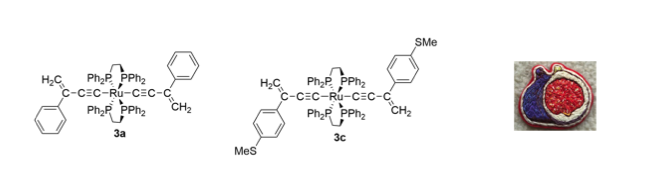
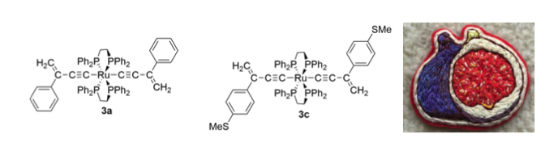

The goal of figpatch is to create an easy way to incorporate external figures and images into figures assembled with {patchwork}.
Installation
Install the development version from GitHub with:
# install.packages("devtools")
devtools::install_github("BradyAJohnston/figpatch")Example
To use images inside of a patchwork object, they need to be converted to a {ggplot} object via fig(). Once converted, you can assemble the patchwork as you would otherwise with + / - * & or wrap_plots().
image_path <- system.file(
"extdata",
"fig.png",
package = "figpatch",
mustWork = TRUE)
img <- fig(image_path)
plt <- ggplot(mtcars) +
aes(mpg, cyl) +
geom_point()
pat <- patchwork::wrap_plots(img, plt, plt, img)
pat
The aspect.ratio of the figs is set to the dimensions of the image, but the plots can still resize as you would expect. For each plot that aligns with a fig, it’s dimensions will match that of the fig (as above). If however it only aligns on one axis, then the other is free to resize to fill up the total image space (as below).
wrap_plots(plt, img, plt, img, ncol = 2)If for some reason you want your fig to also resize (and thus distort your image) then you can specify a particular aspect.ratio or let it be free!
free_fig <- fig("inst/extdata/fig.png", aspect.ratio = "free")
wrap_plots(free_fig, plt, ncol = 1)
Elegant.
Tagging
Patchwork already provides support for easy tagging of sub-plots and sub-figures using plot_annotation().
pat + plot_annotation(tag_levels = "A")For a lot of figures that include images, tags should be placed on top of the images themselves. Tagging in {patchwork} currently utilises the ggplot tag option from ggplot2::labs(tag = ...) but which currently doesn’t support tagging inside plot borders.
Lets see how it plays out.
The assembled figs
knitr::opts_chunk$set(fig.height = 2, fig.width = 7)
patchwork::wrap_plots(img, img, img, nrow = 1)
{patchwork} tagging the figs
patchwork::wrap_plots(img, img, img, nrow = 1) +
plot_annotation(tag_levels = "A")
{figpatch} tagging the figs
To add internal tags to the figs, use the fig_tag() function. Assembling with {patchwork} can continue as normal.
img1 <- fig_tag(img, "A")
img2 <- fig_tag(img, "(B)")
img3 <- fig_tag(img, "misc")
patchwork::wrap_plots(img1, img2, img3, nrow = 1)
A number of default positions can be supplied to fig_tag(pos = ...) or a custom vector which will place the text in npc coordinates (0 to 1 for both x and y) and automatically adjust for the aspect ratio of the fig.
img1 <- fig_tag(img, "A", pos = "topright")
img2 <- fig_tag(img, "(B)", pos = "bottomleft")
img3 <- fig_tag(img, "misc", pos = c(0.4, 0.9))
wrap_plots(img1, img2, img3, nrow = 1)
fig_wrap()
To quickly label and wrap multiple figures, use fig_wrap()
To add borders around individual figures, use b_* options inside of fig_wrap() or specify them individually with fig().

Assembling lots of figures.
knitr::opts_chunk$set(fig.height = 5, fig.width = 7)
figs <- lapply(1:9, function(x) img)
fig_wrap(
figs,
nrow = 3,
tag = 1,
suffix = ")",
b_col = "gray20",
b_size = 2
)
Adjust the padding around plots with b_margins and change the unit used with b_unit.
fig_wrap(
figs,
nrow = 3,
tag = 1,
suffix = ")",
b_col = "gray20",
b_size = 2,
b_margin = ggplot2::margin(8, 8, 8, 8)
)
Adding specific sub-plot text
You can add labels to the text using the fig_lab() function. Some customisations are available. At the end of the day, a fig() is just a ggplot object, and the labels are just the axis titles (x or y). You can add your own theme() elements to customise further.
img1 <- fig_lab(img1, "Above is a fig.")
img2 <- fig_lab(img2, "This is an italic label.", fontface = "italic")
img3 <- fig_lab(img3, "Below is a fig.", pos = "top")
design <- "AB
CC"
wrap_plots(img1, img2, img3, design = design)